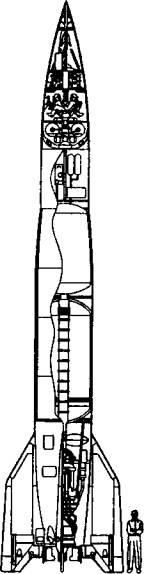

Самостоятельные шаги
Набравшись опыта при изучении немецкой техники, оценив не только ее достоинства, но и недостатки, наши конструкторы пошли дальше, приступив к созданию новых, более совершенных ракет.
ЭКСПЕРИМЕНТЫ И УЧЕНИЯ. Изучив трофейную технику, Сергей Королев понял, что на основе Фау-2 можно создать ракету с дальностью в 600 км. Для этого надо было лишь форсировать немецкий жидкостный ракетный двигатель. Он предложил несколько вариантов, один из которых был принят за основу, получив обозначение Р-2.
Испытательные пуски и работы по совершенствованию конструкции продолжались почти два года и завершились в июле 1951 года. А 27 ноября того же года Р-2 была принята на вооружение.
В этой ракете Королев впервые применил головную часть, отделяющуюся от первой ступени после выгорания топлива. Отбросив лишний груз, боеголовка теперь могла пролететь большее расстояние, а сама стала массивнее. Увеличенный тротиловый заряд создавал при взрыве зону поражения площадью 950 кв. м.
Однако время подготовки к старту так и осталось прежним — 6 часов. Причем находиться в заправленном состоянии ракета могла лишь четверть часа. После этого необходимо было либо пускать ее, либо сливать жидкий кислород и горючее. А потом в случае необходимости повторять весь комплекс предстартовой подготовки заново.
Тем не менее, не имея лучшего, приходилось довольствоваться и этим. В 1952 году состоялись первые учебно-боевые пуски Р-2 в войсках. А еще спустя год состоялись уникальные в своем роде испытания.
Суть экспериментов заключалась в следующем. В головную часть ракеты наряду со взрывчаткой помещалась емкость с радиоактивной жидкостью. Когда на большой высоте производился подрыв заряда, жидкость распылялась над поверхностью Земли в виде радиоактивных осадков.
Чуть позднее эту «грязную» бомбу еще усовершенствовали, поместив жидкость не в общую емкость, а в большое количество малых сосудов-капсул. Сначала первый взрыв разбрасывал их, а потом каждая капсула подрывалась, обеспечивая большую площадь радиоактивного заражения.
Ракеты стартовали с полигона Капустин Яр и взрывались над пустынными районами северо-восточного Казахстана, делая местность полным аналогом печально знаменитого Чернобыля.
ПОВЫШАЯ ДАЛЬНОСТЬ. Дальность в 600 км тоже не удовлетворила руководство нашей страны. От Королева требовали ракет, которые могли бы перелететь через океан, достать до Америки. Но тот понимал: чудес на свете не бывает, а потому старался продвигаться последовательными шагами.
В апреле 1953 года на полигоне Капустин Яр начались первые пуски баллистической ракеты, обладавшей дальностью полета свыше 1000 км. После соответствующих доработок ракета Р-5 в 1955 году была принята на вооружение.
Максимальная дальность ее полета составляла 1200 км. Стартовая масса — 26 т. Длина ракеты — 20,75 м. Кроме основной головной части, ракета могла нести от 2 до 4 подвесных (боковых) боеголовок, снаряженных обычным взрывчатым веществом. При этом максимальная дальность полета снижалась до 810 и 560 км, соответственно.
Впрочем, Р-5 не получила большого распространения в войсках, и в 1961 году она была снята с вооружения.
КОНКУРЕНТЫ КОРОЛЕВА. Оказывается, оригинальных мыслей у человечества не так уж много. Чаще всего все мы в аналогичных ситуациях поступаем сходно. Ныне уже широко известно, что, увезя к себе за океан Вернера фон Брауна и его коллег, американцы постарались выжать из них все возможные «соки», тем не менее не давая чужестранцам особой свободы действий. Нечто подобное делалось и у нас. В СССР была своя трофейная команда. В ее составе был даже Гельмут Греттруп, который в Третьем рейхе был заместителем фон Брауна по радиоуправлению ракетами и электрическими системами Фау-2.
Лагерь немецких специалистов, размещенный в районе города Осташкова на озере Селигер, примерно в 150 км от Москвы, получил статус филиала № 1 НИИ-88. Директором филиала был назначен Петр Малолетов. Руководство с немецкой стороны принял на себя профессор Вольдемар Вольф, бывший руководитель отдела баллистики фирмы «Крупп», а его заместителем назначили инженера-конструктора Бласса.
В состав немецкого коллектива вошли видные ученые, труды которых хорошо были известны в Германии: специалист по радиолокации Франц Ланге, аэродинамик Вернер Альбринг, гироскопист Курт Магнус и некоторые другие. К сожалению, большинство из них не работали непосредственно с фон Брауном в Пенемюнде, так что им пришлось учиться на ходу.
Тем не менее по предложению Греттрупа исследователям была предоставлена возможность разработать проект новой баллистической ракеты Г-1 (или Р-10).
К середине 1947 года эскизный проект Г-1 был разработан и 25 сентября обсужден на научно-техническом совете НИИ-88. Самым существенным новшеством в проекте оказалась модернизация схемы двигателя. Турбина, вращающая насосы подачи спирта и кислорода, приводилась в движение газом, отбираемым непосредственно из камеры сгорания двигателя. А повышенная точность стрельбы обеспечивалась новой радиосистемой управления.
Греттруп высказал уверенность в высоких достоинствах проекта, однако научно-технический совет вынес постановление о необходимости всесторонней «стендовой» проверки конструктивных решений. При этом участники совета прекрасно понимали, что у немцев не было никаких возможностей проверить свои идеи на практике ввиду полного отсутствия на острове Городомля, посреди Селигера, где содержали немцев, какой бы то ни было экспериментальной базы. Просто Королеву и его соратникам не нужны были конкуренты с их «параллельными проектами».
В общем, ни проекту Г-1, ни проекту Г-2 так и не дали ходу. Между тем проект Г-2 предусматривал дальность полета ракеты на 2500 км с боеголовкой, весившей целую тонну!
Зато получил развитие, отвлек на себя немало средств и ресурсов другой проект, о достоинствах которого вы сейчас получите возможность судить сами.
СУБОРБИТАЛЬНЫЙ ВР-190. Среди прочих «трофейщиков» побывал в начале 1945 года в поверженной Германии и Михаил Клавдиевич Тихонравов. Тот самый, что создал первую советскую ракету ГИРД-09, которая действительно полетела.
Оценив разрыв между советской и германской ракетной техникой, вернувшись домой, он, видимо, решил больше не размениваться на мелочи, а засел за разработку пилотируемого суборбитального корабля, который бы мог использовать в качестве носителя трофейную баллистическую ракету. Официально было сказано, что такой корабль будет использоваться для изучения верхних слоев атмосферы. На самом же деле, как вы понимаете, предусматривалось и военное применение этой конструкции. Так сказать, в противовес стратосферному бомбардировщику доктора Зенгера.
В работе над проектом М. К. Тихонравову помогали его сотрудники — инженеры Чернышев, Ивановский, Москаленко и Крутов. Официально проект хотели назвать «Ракета Тихонравова-Чернышева». Но сам Николай Чернышев, говорят, предложил другое название — ВР-190 (высотная ракета, способная подняться на 190 км).
Учитывая слабость нашей электроники, разработчики с самого начала предполагали, что ракетой в полете будут управлять два пилота. Один будет дублировать другого, да одиночке, пожалуй, и не справиться со всем объемом работы. Ракету пилотировать, пожалуй, посложнее, чем самый скоростной истребитель…
К середине 1945 года первый вариант проекта был продемонстрирован начальству. При этом было доложено, что суборбитальные полеты не только технически возможны, но и послужат хорошим средством для решения целого ряда практических задач. В частности, предполагалось оценить, как действует кратковременная невесомость на возможность человека ориентироваться в пространстве и принимать правильные решения по управлению аппаратом, наблюдению за окружающим пространством и т. д.
Для того чтобы с гарантией вернуть экипаж на Землю, проектировщики предусмотрели возможность пиротехнического, т. е. взрывного отделения герметичной кабины от головного отсека ракеты. Поскольку сама кабина была выполнена в форме «фары» (эта идея потом была использована при создании первых пилотируемых кораблей), спуск в верхних слоях атмосферы должен был проходить по баллистической кривой без кувырканья спускаемого аппарата. Затем срабатывала парашютная система. Аналогичная система была потом задействована на первых «Востоках» и «Восходах».
Интересно, что создатели ВР-190 предусмотрели даже возможность мягкой посадки, когда на самом последнем этапе перед приземлением включались небольшие ракетные двигатели и смягчали удар.

Схема суборбитальной ракеты, согласно проекту ВР-190.
Получив первоначальное одобрение своих коллег, разработчики затем вышли со своим проектом на заседание коллегии Министерства авиационной промышленности. Однако министр и его окружение решили, что космос — вне сферы их интересов.
Тогда авторы проекта нашли возможность в 1946 году обратиться непосредственно к И. В. Сталину. Генералиссимус запросил подробности у министра авиапрома Михаила Хруничева. Тому пришлось готовить соответствующую докладную записку.
В ней, в частности, говорилось, что, по мнению группы экспертов, возглавляемых заместителем начальника ЦАГИ академиком Христиановичем, а также специалистов авиапромышленности, Министерства вооружения и электропромышленности, такой полет теоретически и технически вполне возможен. Нужно лишь будет несколько удлинить корпус ракеты Фау-2, чтобы в нем хватило места для кабины пилотов, более вместительных баков с топливом и дополнительного оборудования.
Более того, добавляет министр, аналогичные полеты ракет в Германии на высоту порядка 30 км уже проводились. А вот спуск пилотов, по его мнению, представляет определенные трудности, которые потребуют доработок как самой кабины, так и ряда устройств, управляющих процессом расцепления и т. д.
В общем, Хруничев полагал, что для дальнейшей разработки проекта необходимо создать конструкторское бюро при заводе, где и должны были производиться подобные ракеты, а главное, жидкостные ракетные двигатели на основе Фау-2, в серийном порядке.
Кроме того, Хруничев предлагал еще и еще раз тщательно изучить все данные об испытаниях Фау-2, провести аналогичные испытания на наших стендах и только после соответствующих доработок проводить испытания ВР-190 в полном объеме. Ну, а поскольку работа предстоит немалая, то министр просил увеличить сроки и отодвинуть дату первого спуска относительно той, что предлагают сами авторы проекта. Тут нужно не два года, как полагают Тихомиров и его коллеги, а больше, писал Хруничев. Кроме того, саму группу стоило бы усилить за счет привлечения опытных специалистов.
Сталин в целом согласился с предложенными доводами. Однако в Минавиапроме дела разворачивались столь медленно, что потерявший терпение Тихомиров решил обратиться за содействием к начальнику НИИ-4 Алексею Нестеренко. Тот, вникнув в суть проблемы, предложил группе проектировщиков перебраться в его институт.
Но и тут дела пошли далеко не лучшим образом. По мнению многих ракетчиков, слишком велик был риск, что экипаж не вернется из полета. Многие, в том числе и С. П. Королев, предлагали «обкатать» конструкцию на беспилотных пусках.
В итоге проект, который после доклада Сталину получил гордое имя «Победа», переименовали в третий раз. Теперь он назывался просто «Ракетный зонд» и в первую очередь был нацелен на отработку парашютных систем спасения головных частей ракет, а также отработавших нижних ступеней.
Такое «заземление» проекта не понравилось Тихонравову и его команде, они потеряли интерес ко всей затее. Тем не менее работа была доведена до стадии натурных испытаний. По их успешному завершению ряд сотрудников НИИ-4 были даже удостоены Сталинской премии.
Сами же слухи о том, что русские сразу после войны собирались запустить (или даже запустили?!) людей в космос, и по сей день все еще циркулируют в прессе, возбуждая нездоровый ажиотаж. «Как?! Неужто они летали? И все погибли?…»
Вполне возможно, что слухи эти, как и утечка информации о самих разработках, в свое время были допущены не случайно. Ниже мы с вами поговорим еще о том, почему Сталин собирался делить со своими союзниками территории не только на Земле, но и на Луне. И ему было крайне важно, чтобы слухи о том, что в СССР ведутся интенсивные работы по посылке людей в космос, достигли и ушей вражеской разведки.
А уж получится ли что из этой затеи в действительности, было дело второе. Не выйдет у нас, глядишь, да взбудораженные слухами иностранцы смастерят что-либо сами. И тогда можно будет позаимствовать это «что-либо» уже у них. Вспомните, так было с атомной бомбой, с самолетом типа «летающая крепость», способным нести такие бомбы, да и с самими ракетами, советская родословная которых берет свое начало с полигона Пенемюнде.